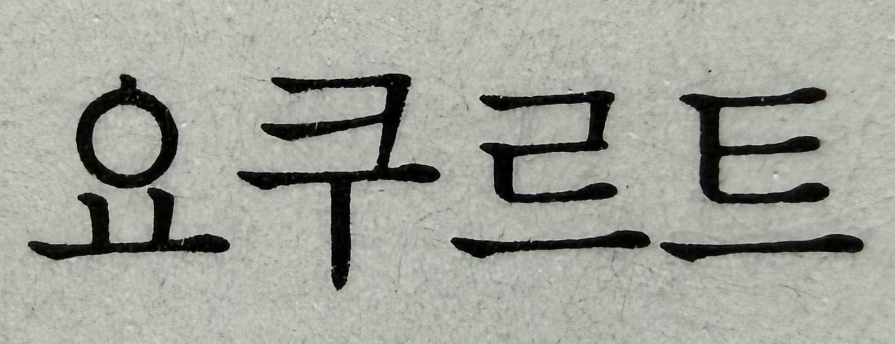
현재 표준 표기 : 요구르트
일반적인 발효유를 뜻할 때는 '요구르트'로,
특정 브랜드 제품을 지칭할 때는 '야쿠르트(상표명)'으로 구분
월간디자인 1993년 7월호 44쪽에서 발췌
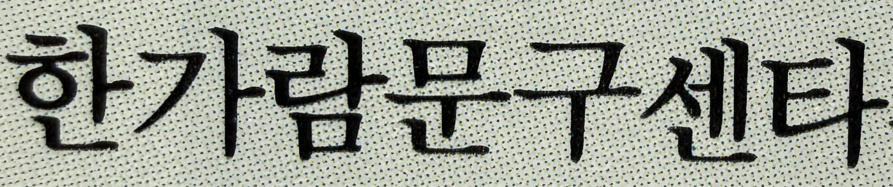
현재 표준 표기 : 센터(center)
‘-er’는 ‘-터’로 표기
‘센타’는 과거 발음 중심 표기 방식
월간디자인 1990년 9월호 29쪽에서 발췌
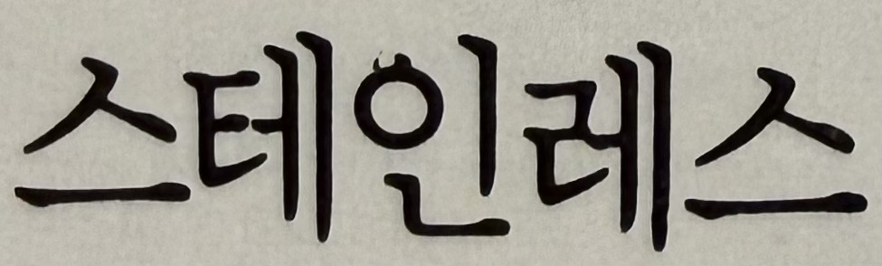
현재 표준 표기 : 스테인리스(stainless)
외래어 표기법(발음 기준 음절화)에 따라 스테인리스로 정리
월간디자인 1990년 9월호 한양광양사 -이달의 크리에이티브-에서 발췌
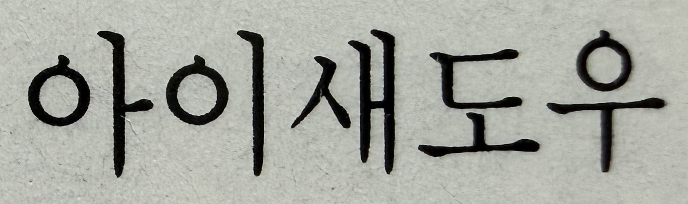
현재 표준 표기 : 아이섀도(eye shadow)
외래어 표기법(sh 발음 반영)에 따라 '아이섀도'로 정리
'아이섀도우'로 많이 사용하지만 이는 비표준어에 해당
월간디자인 1993년 7월호 44쪽에서 발췌
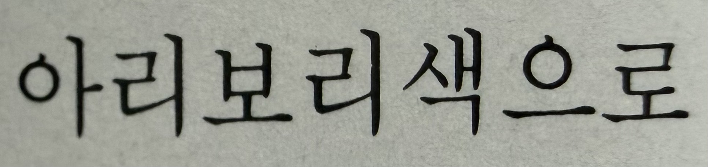
현재 표준 표기 : 아이보리(ivory)
'아리보리'는 음운 오인으로 생긴 비표준 형태
월간디자인 1993년 7월호 44쪽에서 발췌
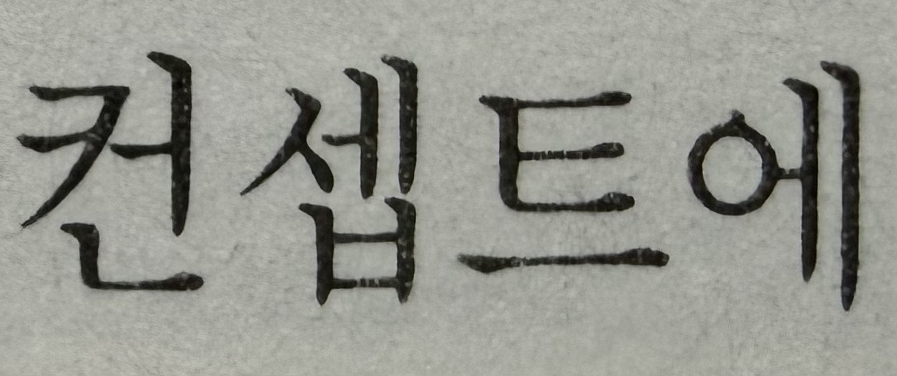
현재 표준 표기 : 콘셉트(concept)
'컨셉'으로 많이 사용되지만 이는 발음 단순화된 비표준 형태
월간디자인 1993년 7월호 57쪽에서 발췌
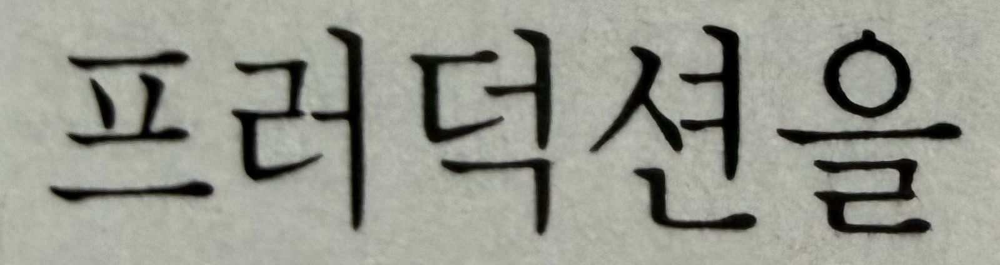
현재 표준 표기 : 프로덕션(production)
'러' 삽입 형태는 발음 오인에 따른 비표준 표기
월간디자인 1993년 7월호 68쪽에서 발췌
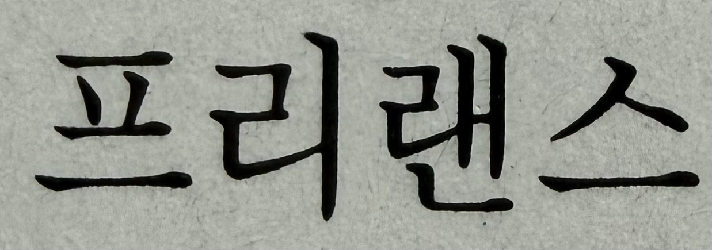
현재 표준 표기 : 프리랜서(freelancer)
직업 명사로 '-er' 형태를 반영해 '프리랜서'로 표준화
프리랜스는 발음/철자 혼동으로 생긴 비표준 형태
월간디자인 1993년 7월호 70쪽에서 발췌
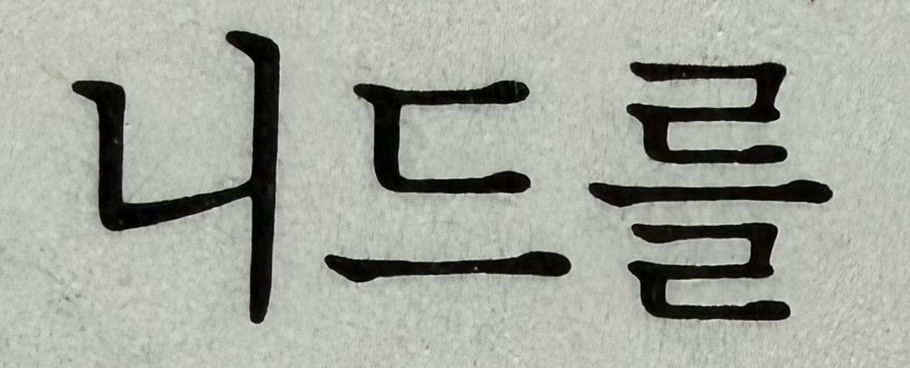
현재 표준 표기 : 니즈(needs)
'need'를 그대로 음역한 오표기
월간디자인 1993년 7월호 97쪽에서 발췌
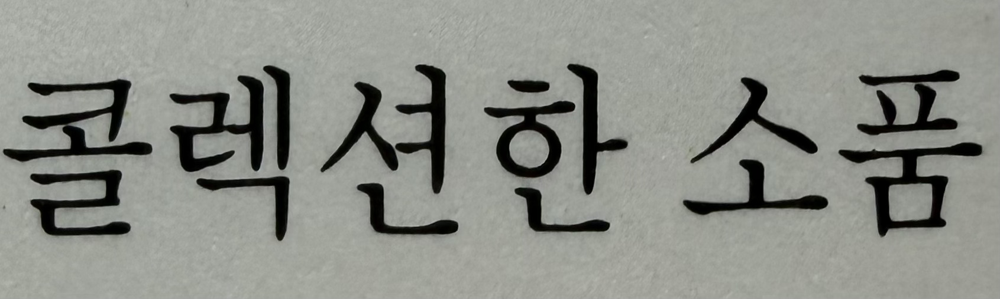
현재 표준 표기 : 컬렉션(collection)
'콜렉션'은 철자 c 발음을 그대로 옮기려다 생긴 비표준 형태
월간디자인 1993년 7월호 97쪽에서 발췌
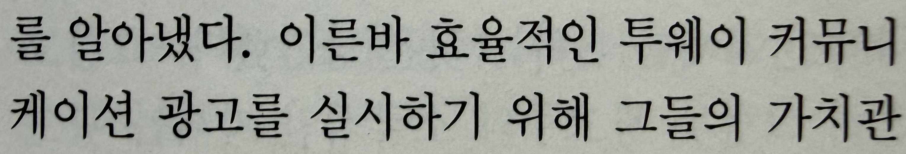
현재 표준 표기 : 양뱡향/쌍방향 소통
'투웨이 커뮤니케이션'이 영어식 표현으로는 쓰이지만 일상 사용은 상대적으로 적음
한국어로 순화된 '양방향 소통' 혹은 '쌍방향 소통'이 더 자연스러움
월간디자인 1993년 7월호 61쪽에서 발췌
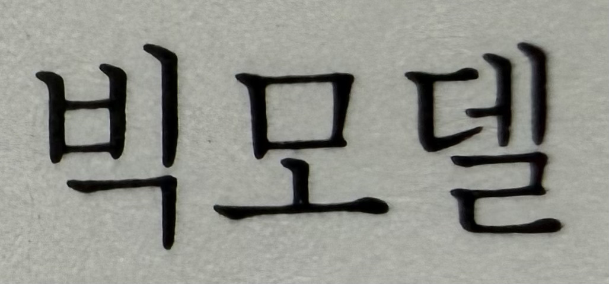
현재 표준 표기 : 톱모델(top model)
표준어도 아닐뿐더러, 대중적으로도 거의 쓰이지 않음
월간디자인 1993년 7월호 95쪽에서 발췌
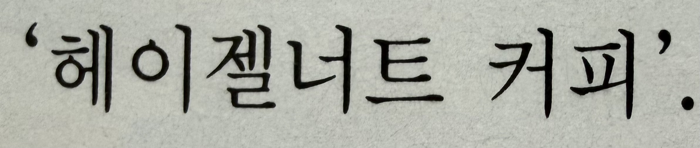
현재 표준 표기 : 헤이즐넛(hazelnut)
'헤이젤너트'는 영어 철자식 발음 그대로 옮긴 오표기
외래어 표기법에서 ‘hazel = 헤이즐’로 음절 단위 대응
외래어 표기 원칙(발음 중심)에 따라 '너트'가 아니라 '넛'으로 표기
월간디자인 1993년 7월호 44쪽에서 발췌
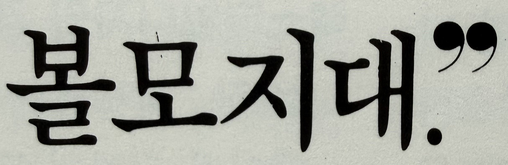
현재 표준 표기 : 불모지대
‘불모(不毛)’는 “초목이 자라지 않는 땅” 의미에서 온 한자어
발음 혼동으로 생긴 오표기
월간디자인 1990년 9월호 25쪽에서 발췌
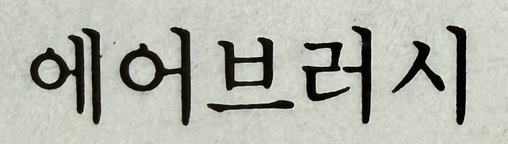
현재 표준 표기 : 에어브러시(airbrush)
'sh'를 '쉬'로 적은 '에어브러쉬'로 많이 사용되지만 이는 비표준어에 해당
월간디자인 199년 월호 쪽에서 발췌
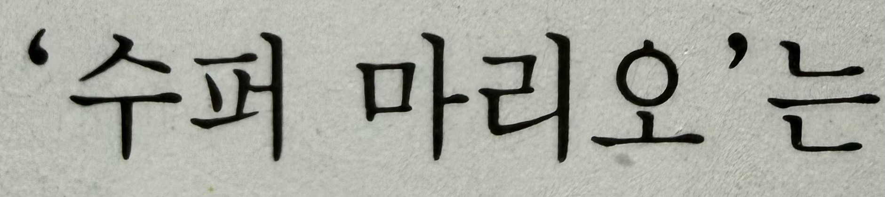
현재 표준 표기 : 슈퍼(super)
'수퍼'는 과거 발음 중심 표기에서 남은 비표준/구식 표기지만 아직도 일부 상표나 간판에 존재
월간디자인 1993년 7월호 103쪽에서 발췌
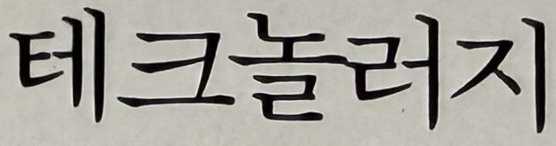
현재 표준 표기 : 테크놀로지(technology)
'-logy'는 '-로지'로 통일, '-러지'는 발음 오인 형태
월간디자인 1992년 9월호 나래디자인문화센터 광고에서 발췌
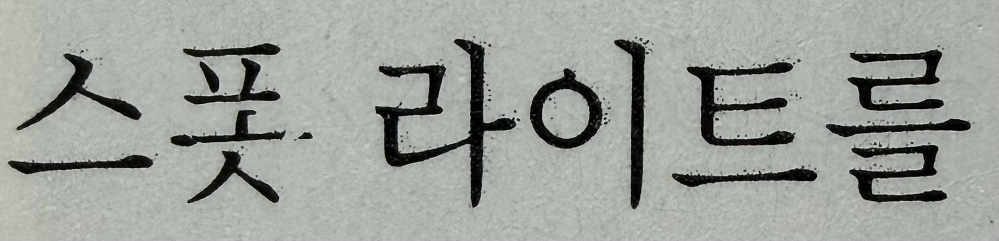
현재 표준 표기 : 스포트라이트(spotlight)
'스폿'형태는 중간 음절이 생략된 비표준 발음식 표현
월간디자인 1993년 7월호 115쪽에서 발췌